Website for complete beginners
All the steps to create your website in old-generation RMarkdown
NOTE: As of 2024-10-18 this brief guide may be considered out-dated. I provided an ultra-brief guide for creating website, and much more, in this online self-published book R beyond data analysis.
Why this guide
Before anything, I want to be very clear with one thing: I am far from being the expert on building a website, or using any of the tools mentioned here. If you are an expert or already familiar with these tools and procedures, this is not meant for you. If anything, please contact me with comments or feedback.
I owe my knowledge of these tools and procedures to a great extent to Nick Strayer, who has put together a super useful beginners guide. Also Dan Quintana offers an amazing guide that is sligthly different from Nick’s. I am sure there are other ‘how tos’ out there, and I think searching for them (with your favorite search engine) using these keywords might help: website with Rmarkdown or github for your website.
This being said, I felt that the knowledge that I possessed before starting building my website was limited or much too scattered at best. That is why I feel there is a need for a complete beginner’s guide. And I do not mean here only for academics. I mean also someone who wants to use the freeware (open source) tools out there to build their own website. For that, one first needs to know a bit about R, Rmarkdown, GitHub and so on.
What should you expect
If you want to create your website, have complete control over it, but you posses no prior knowldge on any of the tools, then this guide is for you.
If you are looking for tips on building a fancy website (with lots of phots, dynamic interactions, etc.), this is not meant for you. This is meant for those who want to have a website that is basic, and later on build and improve on it themselves.
I will direct you to further readings, youtube videos or more advanced material. Read at your leisure time, click away, and hopefully you get to have your own (basic at first) website in just a few hours
1 I wrote this guide from the perspective of a Mac user. For Windows or other operating systems (OS): Search online the equivalent concepts for your OS. For example: The equivalent of Mac’sTerminal for Windows is Command Prompt, or cmd.exe in short. Equivalent short-cuts are given here.
2 You should expect also a lot of words, so have a coffee and a sandwich by yourside. Also patience with yourself.
What tools do you need
1. R
R is a programming language and an open source software (no costs involved) that is developed and maintained by an amazing community of dedicated people across the globe. R is an extremely powerful tool typically used for scientific purposes. Read more on R on this wikipedia page or visit the R community dedicated website here.
To download and install R, you can either search with your favorite search engine R software download or go directly here (I recommend using DuckDuckGo since it doesn’t track your online activity).
You will be redirected to a bunch of different CRAN Mirrors which basically means that the software is available for download from multiple locations at once. My rule of thumb would be: Choose the option from the country you currently are located in. Then follow the instructions on the screen. Installing R follows the typical steps of any other software: A file is downloaded which has to be opened and then the installation window will do the rest.
Now that you’ve installed R you can open it if you’d like, just to see how it looks. Otherwise, have a peep below. That is where you type in your magic R code!

R opens at the first click.1 Not that it is of utmost relevance for us now, but should you want to get a flavor of what R is capable of, and how the “coding” goes, there are tons of beginner’s guide out there ( here or here, for example).
2. RStudio
RStudio is an environment for R. Think of RStudio as a sort of organ for speaking. When we speak a (oral) language we basically create sounds using our tongue, teeth, lips, throat and so on, while the actual content (the message, e.g., I am hungry!) we want to transmit is first developed in our brain. Well, RStudio lets us command all the elements that are needed to speak R. RStudio is where we type in our R code, store and manage our project files (e.g., the files needed for the website we want to create), as well as preview our desired commands (e.g., a table on a page, a formula and the results of an analysis). Using R without RStudio is possible and will still return your desired results, but it won’t be too easy to manage your files. On the other hand, RStudio without R is basically useless.
To download and install RStudio follow the same steps as with R. Either search online the download file or just go here. Like R, RStudio is open source, though it also has more advanced options that can be available against costs. For your website (and typical scientific stuff) the free option is more than enough.
After you’ve installed RStudio you gotta open it, and you will see that the R console you’ve seen above is already integrated.

RStudio.In the picture above you can see the four panels of RStudio, the (a) Console/terminal, (b) Source, (c) Environment/history, and (d) Files/plot/packages/help.
a) Console/terminal Here is where
Ris integrated in. You can type in your code, have your results previewed, as well as any errors (those happen quite a lot) that occur in your coding. Although highly important for scientific purposes, this panel is not the most valuable player (MVP) for the purpose of developing our website. The MVP is the source.b) Source This panel is where you will do about 95% of your
website creating. Think of this panel as the notebook you’d use to write down your memoires-you write, you draw, you comment on your own work, etc. This panel allows you to communicate with the source material, which can beR language,html languageand also lets you populate with content the files needed for the website.c) Environment/history This panel is a place where you can see the history of your work up to that moment. It saves for you the code you ran (either in the console or source panels) and also it contains sort of short-cuts to any data-related work you might have done (especially relevant for sciency stuff). For your website building purpose, it is somewhat important.
d) Files/plot/packages/help This panel allows you to preview what you’ve communicated your machine (laptop) to do. You will note there are at least 5 tabs.
Filesis sort of windows explorer or finder, it is here where you can navigate between folders on your machine (PC or laptop), delete, rename, or more. Here you can also open files into theRStudiosource panel.Plotsis useful for sciencey stuff: If you askRto create a plot for depicting how different are humans and aliens in energy efficiency, then you’d see a graph previewed here. Here you’d need to have data to work with. Not a must for website building.Packagesgives you an overview of packages that are installed for theR language. Now is the right time to understand thatRis a software that comes with an in-build language. Think of it as a preexistent vocabulary: When you are 12, you have a vocabulary of, say, 800 words, and this allows you to communicate well enough. However, as you get older and you’d want or need to express more complex ideas, you’d expect your vocabulary to grow to allow you to express those ideas. That would then mean, your vocabulary needs new words, or newpackagesin terms ofR. TheseR packagesare sets of commands and laws developed by community members to allow for more complex commands. To build your website, you will have to install some of these extraR packages.Helpis, well, where you will see helpful information about a command ofR. It typically works by typing in in yourconsolea question sign in front of a command. Try it yourself inRorRStudio, type in?getwd(). This command returns us our working directory (where on our computer we store the files we are currently working on).Vieweris where you get a preview of your website! This allows you to see in real-time the progress you’ve made in your website building.
Mike here provides a helfpul beginners guide to R and RStudio. Before you move on, you might want to take a bit of time to familiarize yourself with the basics of these two.
3. GitHub account
GitHub is both an online community and a platform where one can basically develop software, websites and so on. GitHub provides among many others a service to store your projects, such as the website you want to create. For a proper introduction into GitHub have a look at the designated wikipedia page here or directly on the GitHub webpage here. Basically, if you are into IT stuff, you are into GitHub.
To open an account, well, you have to first sign up, which you do as with any other websites out there: You choose a username, password, and voila! After you’ve created an account, you will have to verify it and then you are good to go.
When you first open your GitHub account, you will be asked a few questions about your purpose of using the platform-this helps GitHub to facilitate content tailored to your projects. You might, for example, choose to use this platform to learn coding, create repositories, and build a website.
4. Your own personalized DNS (optional)
I recommend doing this step AFTER you have a version of your website you want the world to know of.
DNS stands for Domain Name System, which basically has to do with how computers interact with each-other on the webs, and how each device connected to the internet (your PC, laptop or smartphone) knows what files to retrieve when one types-in a specific request in an internet browser (Firefox, Safari, Chrome, etc.) But, don’t mind my jibber-jabber, read the wikipedia page here or this detailed overview!
Or you can just skip this, as it is too fancy a stuff, and you only need the end-product after all-the custom domain. (Full spoiler: I still don’t get this terminology myself, but it didn’t stop me from having my very own https://adrianstanciu.eu).

DNS: The kind of info I might have studied in primary school and forgot the day after.You can go ahead and have your website without a custom DNS (your personalized web address), as GitHub offers you a standard one following the template <your github user>.github.io. If, however, you want to distinguish yourself, or simply prefer people to remember easier your website, and you are willing to pay per year something between 10 euro - 40 euro (depends on the domain ending), then you do want a custom DNS.
You can get your custom DNS on specilized websites, which you can find by typing in in your favorite search enginge custom DNS providers. I am using euroDNS, and I will use it to illustrate how to link your own website to your very own custom DNS.
You can open an account at euroDNS in the same way as you would do on any other websites: you enter your email address and choose a password, you verify the account, and voila, you are good to go! Now you are facing the decisions what (a) domain ending to choose from and, obviously, what (b) personalized name to give to your website.
- a) domain ending This is the part of a typical website address that comes after the DOT
.. The web addresswww.example.comhas the ending.com, but there are a number of other possibilities, such as.de(country endings),.edu(institution ending) and so on. Not that it matters much per se which domain ending you choose, but it does have to do with presentation and other logical reasons. Here you can read a bit more before you decide on your domain ending. - b) personalized web address This is yours and only yours to decide!
After you’ve chosen both the domain ending and the personalized web address, go ahead and rent that custom domain. Buy it to secure it.
The set-up
1. Git commands on your computer
You need to do some background set-up before being able to communicate with GitHub. At this stage, your local machine has no clue how to do that. You need therefore to teach your computer certain commands (code), and what each code-element stands for. A super helpful guide can be found here.
You might, or might not already have this code installed on your computer. To check that, open Terminal (cmd.exe for Windows users) and type in the following (obvio, press Enter afterwards):
git --version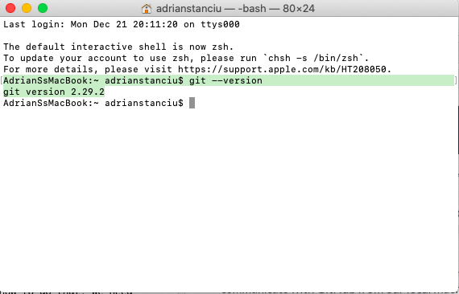
Terminal with git version 2.29.2.If your terminal looks similar to the one above, then you already have git code installed. If not, you need to install it. For a guide and super helpful explanation for different OS, see here. I will not repeat here, just briefly illustrate:
If on a Mac, then copy this and paste in your Terminal (delete what comes after !, as that introduces a comment/note/my blahblah):
xcode-select --install !needed to facilitate the git installation
brew install git !installs the git code via Homebrew
/bin/bash -c "$(curl -fsSL https://raw.githubusercontent.com/Homebrew/install/HEAD/install.sh)" !use this **only** if the above doesn't workAfter all the installing ends (might take some minutes), you can check if the git code is now installed. Type in again git --version (see above).
You are now ready to configure git on your local machine. Go here and follow the instructions in the section Configure Git. (Also see below for an overview).
git config --global user.name "your_username" !replace "your_username" with your github user
git config --global user.email "your_email" !replace "your_email" with your email address used to sign in on GitHub
git config --global --list !voila!You should now be ready to have your computer communicate with GitHub!
1 Homebrew is sort of a Santa’s bag full of cool stuff which your OS developers (Mac OS for example) did not include in the standard operating system. Homebrew is entirely free, and maintained, again, by a community of amazing people.
2. Openning up the communication channel
You probably would like a smooth communiation between your computer and the online repository at GitHub. To avoid annoying requests for loging into your GitHub account every.single.time you want to update your website, you can authorize your computer (local machine) to do that automatically for you. That is, you can provide your laptop with a fancy key-call it SSH key (more here)- to authenticate itself (log in by itself) onto your online repository.
First, you need to create that key, which is unique for you. To set this up, follow the instructions provided here, or type this in your Terminal and press 2 x Enter or Return.
ssh-keygen -C student@example.com -t rsa !instead of student@... use your very own email address you used to register at GitHub
ssh-add ~/.ssh/id_rsa ! this verifies if you have set up a correct keyIf all is correct, you should see something like this
Identity added: /Users/adrianstanciu/.ssh/id_rsa (stanciu.v.adrian@gmail.com)After you’ve created the SSH key, you need to tell GitHub that that specific key is authorized for log in. To perform this step, follow the instructions here, or type in the following:
pbcopy < ~/.ssh/id_rsa.pub !this copies your key (much like copy/paste)Go to your GitHub online account, sign in and…
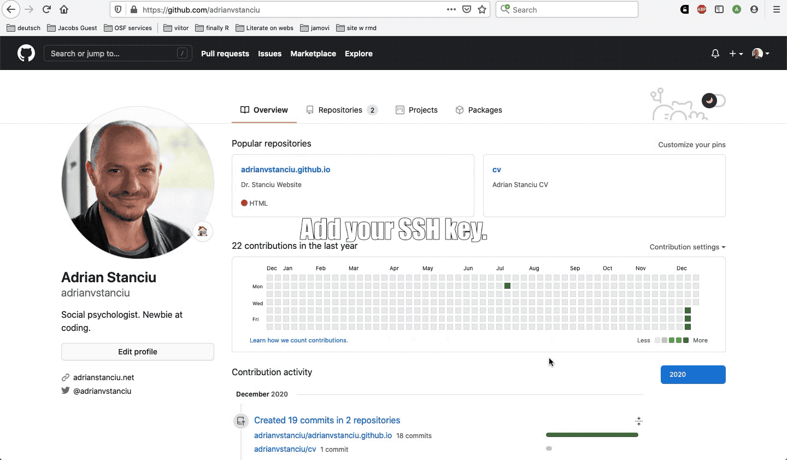
The final step is to double-check that the authentication was successful. Type in the following in your Terminal:
ssh -T git@github.com !change nothingAnd you will first be asked to confirm your key. Type in yes and press Enter or Return key.
The authenticity of host 'github.com (207.97.227.239)' can't be established.
RSA key fingerprint is 16:27:ac:a5:73:53:2d:36:42:3b:56:4d:hb:df:a6:48.
Are you sure you want to continue connecting (yes/no)?A successful authentification looks like this:
Hi adrianvstanciu! You've successfully authenticated, but GitHub does not provide shell access.You only should remember that the first time you communicate with GitHub from your local machine there will be a request for entering a password. You won’t have to do that a second time.
3. Communication between your computer and GitHub
This might seem at first as magic, at least it seemed to me at first. But it is only something new that perhaps you haven’t used or heard of before. What you’d want to achive in this step is to have your computer communicate with GitHub. To achieve this, you need to go through a few steps, some of which must be done only once and some other can be repeated every time when you’d update the contents of your website.
I highly recommend you have a look at the explanation given by Nick Strayer. He writes in plain language about some of the steps that I do not repeat here.
- Create your
repositoryat GitHub.
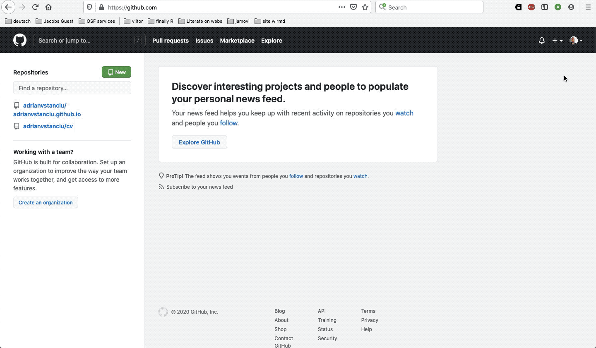
- You want to next
clonethat repository and have it delivered to your local machine. Toclonea repository is another way of saying copy/pasting the contents of that reposity on your computer. It is copy/paste in the sense of taking content from one place and depositing somewhere else. It is cloning however, because you’ll have the identical content both on your local machine and the GitHub repository.
- Using your
Terminalnavigate to a folder on your computer where you want theGitHub repositoryto be stored. You can do this with the commandcdfollowed by the path of the folder. You can find the path of your folder by right-clicking on the folder (or with 2 fingers press on your touch-pad), and selectingGet infofrom the menu it will appear (Mac). In my case, I want toclonetheGitHub repositoryon my local machine (computer) in the folder GitHub which is in the folder adrianstanciu which in its turn is in the folder Users. After you wrote down everything pressReturnorEnter. You will notice that you are now in the desired folder.
cd /Users/adrianstanciu/GitHub/ !replace this with your path- Clone your GitHub repository on your computer, and press
ReturnorEnterkey.
git clone <your perrsonal link on GitHub> !replace <your personal link on GitHub> with your personal link on github- To find your personal link on GitHub, go back to your GitHub online account, and enter (by clicking on it) your repository that you’ve created earlier.
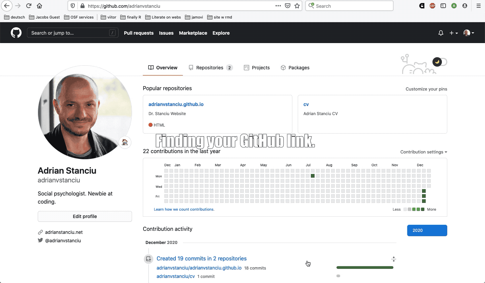
- You should now be able to see a new folder created inside the folder you chose to host your
GitHub repository: This is yourworking directory or wd. If that is the case, yey, you had your first communication between your local machine and GitHub. If that is not the case, something went wrong, and you’d have to start over again. (Annoying, I know!).
4. Package Rmarkdown
Remember R packages I mentioned above? There are tons of those, but for your website you need the Rmarkdown one. I won’t go into details, for that go ahead and read here. On that page you will see also a helpful beginner’s guide on the commands you can use to edit your Rmarkdown pages.
To install the package, you should have your RStudio open. Go to the Console panel and type in:
install.packages("rmarkdown") !this installs the package
library(rmarkdown) !this activates the packageYou will see some text in red being automatically written. This means that the computer is installing the package. If for some reason that doesn’t work, just search with your favorite search engine a way to install the package, or read more about R on the webs.
5. The first files
You are now at the stage where you can begin to populate your working environment with files needed for the website. I am sure there are other ways to create these files, but the way I learned, and how I illustrate it here, is the cool and smooth one.
Have your Terminal open and navigate to your designated folder on the computer. One minor thing to keep in mind! Before you used this path:
cd /Users/adrianstanciu/GitHub/ However, you now know you created a new folder (your repository clone) inside that GitHub folder. So now, you need to slightly adjust for this:
cd /Users/adrianstanciu/Github/myrepository/Now that you are certain, you are operating (creating files, deleting, and so on) inside your repository, you can proceed to create those much needed files with the command touch followed by the files you’d want to create.
- Create a file that manages the putting-together of all other files. This is a must if you want the different pages of your website to actually be ONE website, and not a scattered series of pages. You can later edit at your will to tell your machine in what wacky way you’d like your pages to be glued together.
touch _site.yml- Create
Rmarkdownpages, or files that contain the actual content of your website. In theory you can create as many of these as you’d like and want.
touch index.Rmd !this is the central page of your website, and it is the first to be opened
touch about.Rmd !this is a page about who you are
touch anotherpage.Rmd !this is another empty page that you can name and populate with whatever you'd like- Create the file that will de facto build the website for you.
touch build_site.R These files are now added inside your local repository, and are enough for you to start adding content to you website! Vamonos!
1 Don’t trust me, or yourself, check with Finder or Windows explorer.
The fun part, finally
1. Setting up your RStudio
You can now open (again) your RStudio, and start using it! The first thing you’d want to do is to find those files you’ve just created. To do that, you need to work with the Files/Plots… panel. Navigate your locally stored folder until you arrive at your repository. Open it, and you should now see the files you’ve created above.
Now you have the option to begin editing them, or to help your future self a bit more. You can create an R project that will allow you to open your website project directly from Finder or Windows explores. Think of this as a short cut to your RStudio where you work on your website.
To create your Rproject, follow these steps.
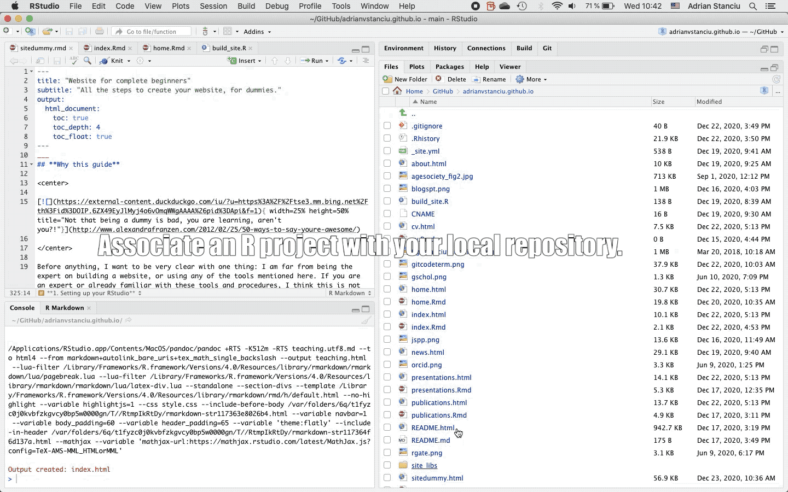
This will create a file .Rproj inside your working directory (repository). You can use this now to open your project. Try this short-cut by quitting your RStudio first, and then double-cliking the short-cut in Finder or Windows explorer. When you open the project, you are automatically inside the desired repository. Magic!
From now on, everything happens inside the RStudio. Well, almost…
2. The putting-together of your site
From the Files/Plots/... panel find and open the file _site.yml you’ve created earlier. A blank tab will be opened in the Source panel (upper-left corner). You are now operating on that file, and you’d want to populate the file with information.
The very basic elements of this page are as follows. You can copy/paste from below (without the ##).
name: "name of the website" ## it won't be shown
output_dir: "." ## it will create new output in the same working directory
navbar: ## this is the navigation bar of your website ### below are elements of it
title: "Dr. Adrian Stanciu" ## the title of your website, it will be shown
left: ## on which side will the next elements be shown ### right is also possible
- text: "About Me" ## the title of your main page, it will be shown
icon: fa-info ## if you want to add tiny icons next to your text
href: index.html ## the refernece file to be displayed
- text: "Home"
icon: fa-home
href: home.html
output: ## this is about the output itself, here are settings of the page
html_document:
theme: flatly ## is the theme of your website (template)If you want to add icons, follow the structure icon: fa-XXX and select your favorite one from Font Awesome here.
Font Awesome is a repository of icons that can be integrated seeminglesly with R. When you open the website, use the search bar (upper-left corner) and type in whatever your heart desires. For example, house. You will get a number of hits, from which you can choose the icon you like best. Open it and then copy the html value (fa-house-user in the example below) and paste it into your _site.yml text above. Be careful to select an icon that is free, otherwise nothing will be shown on your website!
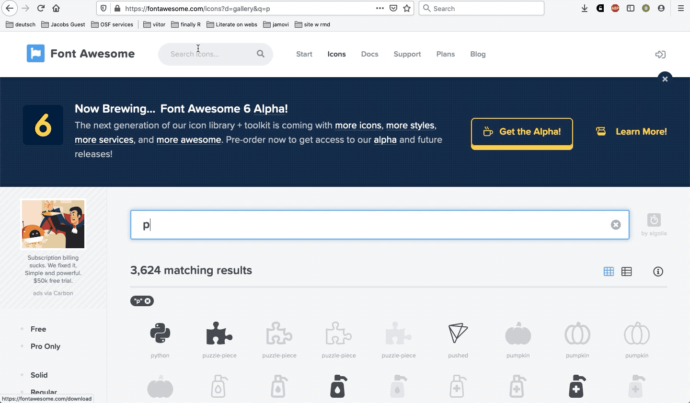
You can go ahead and save the edit for now. Later on, you can use the might of the internet to create fancier stuff in here.
3. The content editing part
You are finally there. You are about to add content to your website page. Open about.Rmd, and again you will see a blank tab in the Source panel. Write something there down, while remembering to give it a title (as shown below). To get you started, copy/paste what’s below.
---
title: "About me" ## title of this page ### it will apear on the website
---
This is my about page. ## here you can add text, "attach" photos, links, and so on
[Open GitHub](https://github.com/) ## links an external webpage
 ## links a photo from the web
 ## links a photo from your working directory
I want to be able to edit this page further. Ahhh, the info I need is [here](https://rmarkdown.rstudio.com/authoring_basics.html). ## includes an external link in your text.
The --- are a must above and below the title of the page. That is how Rmarkdown knows to separate body content from title of page.
After you’ve finished with the about.Rmd page, save your progress, open and edit also the index.Rmd page. The same story applies here. Note that all .Rmd files are in actuality Rmarkdown files which all can be edited in an identical manner.
Remember that the index.Rmd is the first page opened to your visitors. So you can add here infos about your current projects, about your new poem, or something else.
4. The build my website part
Once you’ve edited the .Rmd and .yml files, you are good to go to create your very own (basic) website. Luckily this is the easiest part of all. You can build your site from the files you’ve just created in two ways.
- If you are using the
.Rproj(if you’ve created an R project), you can see in theEnvironment/...panel a tab calledBuild. Open it, and press theBuild Websitehammer! That blank window will be populated with some$%$@^^^@@symbols. If the last thing you read isOutput created: index.html, well, you’ve just build your website!
- You can also use the file
build_site.Ryou’ve created previously. Open it, and copy/paste this in the blank page:
#sets up the working directory
setwd ("your path to your repository here") ## this is where you add between " " the path to your files for the website
#render the site
rmarkdown::render_site() You need to run this command. Select everything first, and then press Run which you can find on the navigation bar of the build_site.R tab. Again, some weird text will appear, this time in the console panel. But ideally you’d want the same last line of text to read: Output created: index.html.
You can preview your website at this stage!!! If not automatically opened, go to Files/Plots/... panel and press on the Viewer tab. Voila!
Also, go to Finder or Windows explorer and open the website repository. From the files there, double-click (open) the file index.html. Your site will be opened in your favorite web browser!
5. The I want more part
Who doesn’t?!
At this stage, you already have the very basic structure of your website, which means you’d probably want to do some more magic to accommodate your creativity. You can do that by further editing your .Rmd or .yml files. See above for some suggestions where to start from. Or just go ahead and search the Internet for “how tos”.
One more thing you might see as useful is the button Knit, which is available only for .Rmd files, and can be found on the navigation bar of those file types. This button puts together a preview of the content of the page you are currently workin in. You can knit an .html file, but also .pdf or .docx files.
For the purpose of creating a website, make sure you knit an .html. Next to the Knit button, there is a drop-down menu. Open it and choose html. You can also make sure the preview is opened in the Viewer tab (lower-right corner). For that, open the drop menu of the button next to knit, the settings and select Preview in Viewer Pane.
From now on, whenever you want to preview your page, you can knit it and see the way it looks next to the source panel. Have fun!
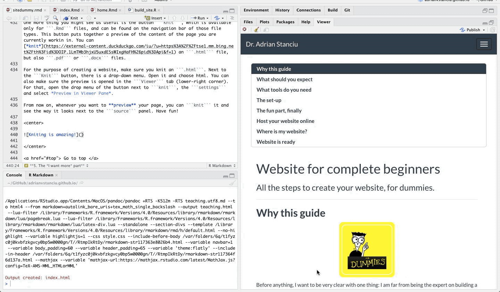
Host your website online
So far you have a beautifully-looking website, which is great and all. But, you want your website ON-LINE for eveyone to see, and not locally stored just for your eyes only. Or your dog. Or cat.
When you are satisfied with the way your website looks, and you are ready to have it on-line, then instruct your computer to push or send everything to your GitHub online repository. This is where all that pre-setup from before comes in handy. Now you only need to do the following using your Terminal or cmd.exe:
Make sure you are in the right working directory (your folder where all the website files are stored). If not, navigate again using the
cd <add your path here>.Once in the right directory, you are going to command the computer to:
- Select everything inside that repository and make it available to Github. Press
Enter.
git add -A- Give a name to the action we are about to do. This will appear on GitHub as an update (see below). Press
Enter.
git commit -m "This is the first website I made." ## see in red below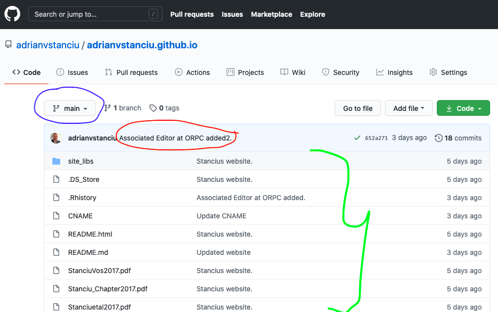
- Push/send/transfer everything to your on-line repository. Press
Enter. This will now (a) take a few seconds and (b) might ask once for your password.
git push origin main #see in blue in the photo aboveIf now you go to your GitHub account and open the website repository, you should see that the files from your local computer are cloned there, as highlighted in green in the picture above.
You have this? Then you are A-M-A-Z-I-N-G! You don’t, then something went wrong and you’d have to re-do some steps. …you will get there in no time!
Where is my website?
1. The non-personalized one
It will take a bit of time for GitHub to put everything together. But don’t worry, your website is shorty online. To find its address, do this:
- 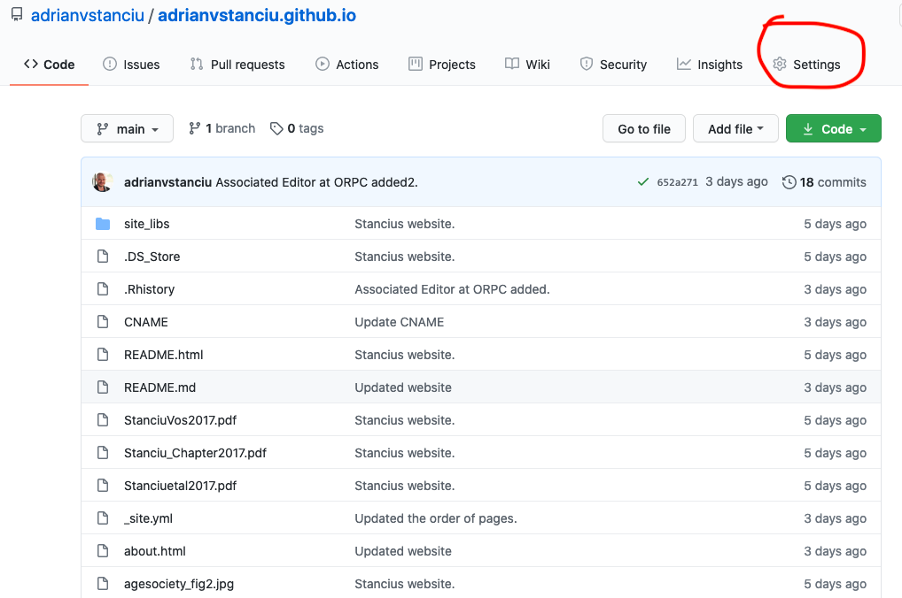
After you click on Settings, scroll down untill you reach the GitHub Pages section. Make sure to change under Source the branch that corresponds to your repository. In my case it is main. Then save. After that you will have your address displayed as shown in the green elipse below.
- 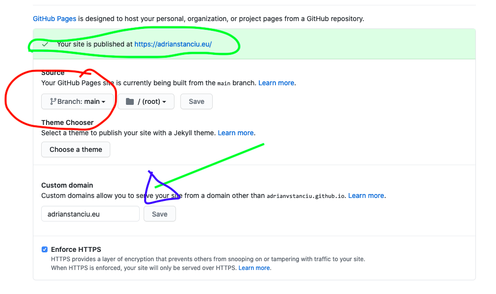
Note: Only add something in the Custom domain field if you want a personal DNS name. Otherwise, leave blank.
ENJOY YOUR NEW WEBSITE.
2. The personalized one
If you’ve chosen to create a custom DNS, you can type the name you’ve chosen as shown in the picture above, as indicated by the green-blue arrow. Click save. You will notice that some form of error message will appear instead of the non-personalized website address from before. Don’t worry, that is exactly what you wanted at this stage. This means that GitHub can no longer recognize the standard domain as the address for your website. You will change this now.
Got to your custom DNS provider and follow the instructions there, which should be similar to the steps I’ve taken using euroDNS.
When you log in your DNS provider, navigate to the page where your custom domain is stored and can be managed.
Find the section where you can manage the
DNS zoneof your domain, and open it. What you’d want to see next is something like this, only that those values circled in red must now be typed in somewhere. You do not have those, yet.
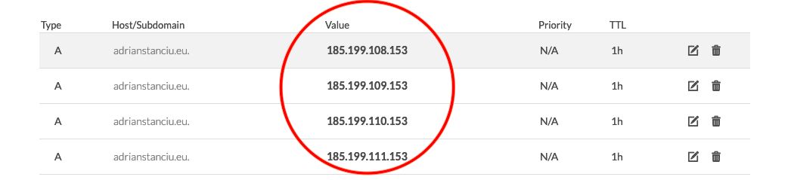
If to your domain there are still some weird values or pages associated, and you have the option to delete them, do it now.
After you have a clean slate, you can now add new records. For hosting at GitHub we need to create four so-called
Atype records, one for each of the values in the red circle above. Read more on configuring a custom domain onGitHubhere.Add four new records, as shown below. Make sure to have the
A (IPv4 Address)selected.
After all 4 records are created, and they look like above (see nr. 2), then you are good to go! Go back to your GitHub account, and see whether your custom website address is now displayed, and if you get the green for go.
One last thing you should do is to make sure you’ve selected
Enforce HTTPS, as indicated with the green-blue arrow above. That adds an extra layer of protection to your website.
ENJOY YOUR NEW WEBSITE.
Website is ready
Your website is now ready to be shown to the world!
One final thing you should be aware of is that if you’ve chosen a custom domain, you’ve created a website that can be accessed only with the prefix https://. You will notice that typing www. redirects you to a non-existent page. That is because you haven’t specified this particular prefix in your DNS provider, yet. I leave this task to you, should you want to do it.
Also a big thank you to you for reading and trying out this guide.
What next?
Once more, I want to mention Nick Strayer’s and Dan Quintana’s influence on creating this guide, much of it is written in a way simplified language here. Have a look at their guides as well.
Also, you can further read the official guide from Rmarkdown developers on how to use the package for website building.
Or continue getting better at creating your website reading this amazing book by Yihui Xie, Amber Thomas, and Alison Presmanes Hill.